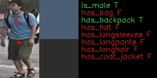
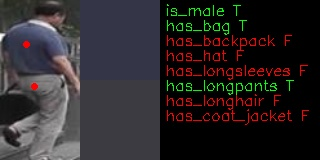

Use Case and High-Level Description
This model presents a person attributes classification algorithm analysis scenario. It produces probability of person attributions existing on the sample and a position of two point on sample, whiches can be used for color prob (like, color picker in graphical editors)
Examples





Specification
| Metric | Value |
|---|---|
| Pedestrian pose | Standing person |
| Occlusion coverage | <20% |
| Min object width | 80 pixels |
| Supported attributes | is_male, has_bag, has_backpack, has hat, has longsleeves, has longpants, has longhair, has coat_jacket |
| GFlops | 0.174 |
| MParams | 0.735 |
| Source framework | Pytorch* |
Accuracy
| Attribute | F1 |
|---|---|
is_male | 0.91 |
has_bag | 0.66 |
has_backpack | 0.77 |
has_hat | 0.64 |
has_longsleeves | 0.21 |
has_longpants | 0.83 |
has_longhair | 0.83 |
has_coat_jacket | NA |
Performance
Inputs
- name: "input" , shape: [1x3x160x80] - An input image in following format [1xCxHxW], where
- C - number of channels - H - image height - W - image width. The expected color order is BGR.
Outputs
- The net outputs a blob named 453 with shape: [1, 8, 1, 1] across eight attributes: [
is_male,has_bag,has_backpack,has_hat,has_longsleeves,has_longpants,has_longhair,has_coat_jacket]. Value > 0.5 means that an attribute is present. - The net outputs a blob named 456 with shape: [1, 2, 1, 1]. It is location of point with top color.
- The net outputs a blob named 459 with shape: [1, 2, 1, 1]. It is location of point with bottom color.
Legal Information
[*] Other names and brands may be claimed as the property of others.